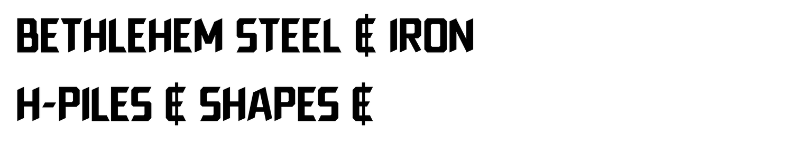
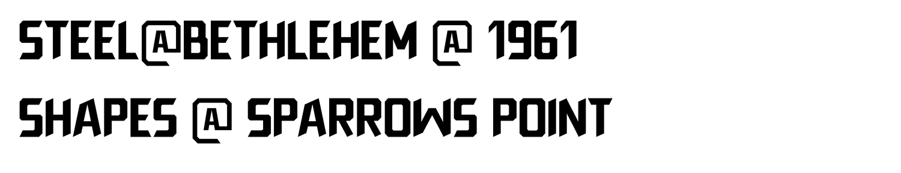
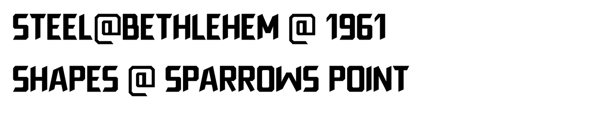
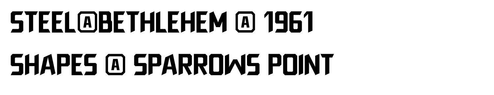
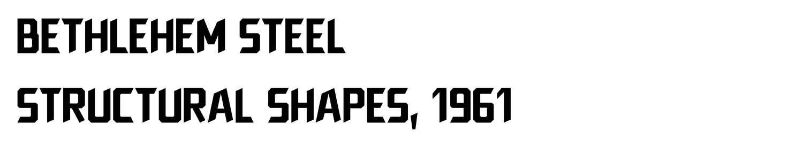
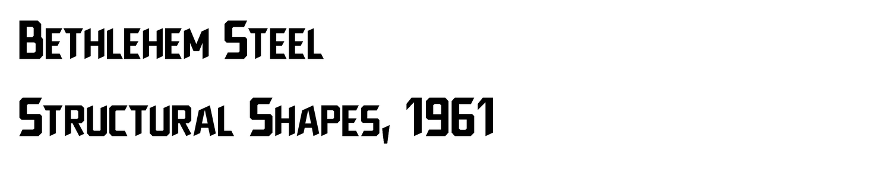
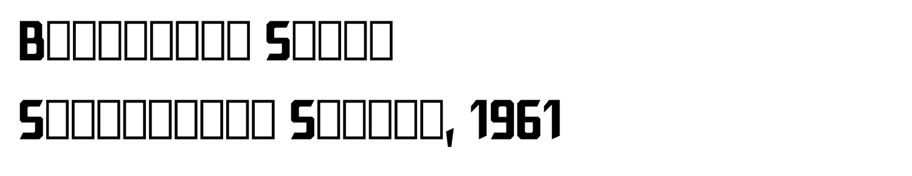

Beam Gothic: three decisions
Click the option you want in each group, then Submit at the bottom. Every option is drawn in the font itself and set in words from the source. v2.000 is currently built on the ones marked Recommended.
1. Ampersand
The source has no ampersand, and the first draft was cut from v1.000. This is the least settled of the three, so "none of these" is a fair answer.
A. Et construction Recommended E skeleton, a rising stroke, a spurred bar. The only one that can't be taken for another character in the font. On its own it leans toward a 6 with a crossbar. B. Figure-8 with a leg The cut v1.000 idea, redrawn. In a line it reads as the figure 8. C. Struck reversed 3 Sign-painter's shorthand. In a line it reads as a cent or euro sign. 
None of these Draw three new constructions for another round.
2. At sign
A. Open ring around a small A Recommended The A's foot runs out into the ring the way the tail of an @ does. Matches the O and keeps the font caps-only. 
B. Open ring around a boxed a Closest to a conventional @, at the cost of the font's only lowercase shape. 
C. Closed ring, no tail Reads more like a monogram than an @. 
None of these Draw three new constructions for another round.
3. Lowercase keys
A. Capitals Recommended The source is a caps-only wordmark, and nothing in it supports a second alphabet. 
B. Small capitals Shown as a preview: capitals scaled to 80 percent, which thins the stems. Picking it means redrawing 26 letters and their accents at full weight before a release. 
C. No lowercase The boxes are where a browser would fall back to another font. Takes the font below Google Fonts Latin Core. 
4. Notes
Anything else